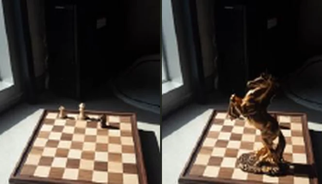

Yonsei University · Computer Science
Jinwoo Kim

What makes a good photograph?
I’m a Ph.D. student at Yonsei University, advised by Prof. Seon Joo Kim. I explore what the next generation of photography might look like. One direction I’m drawn to is generative photography and its potential to make creating and editing images more personal.
Selected Research
All publications



Academic Service
-
Top Reviewer, NeurIPS
2026
-
Reviewer since 2023
CVPR, ICCV, ECCV, NeurIPS, AAAI, ICML, TPAMI, TIP
Additional Experiences
-
Naver Clova
–Research Intern, Video Team
-
Hyundai Mobis
–Data Science Team